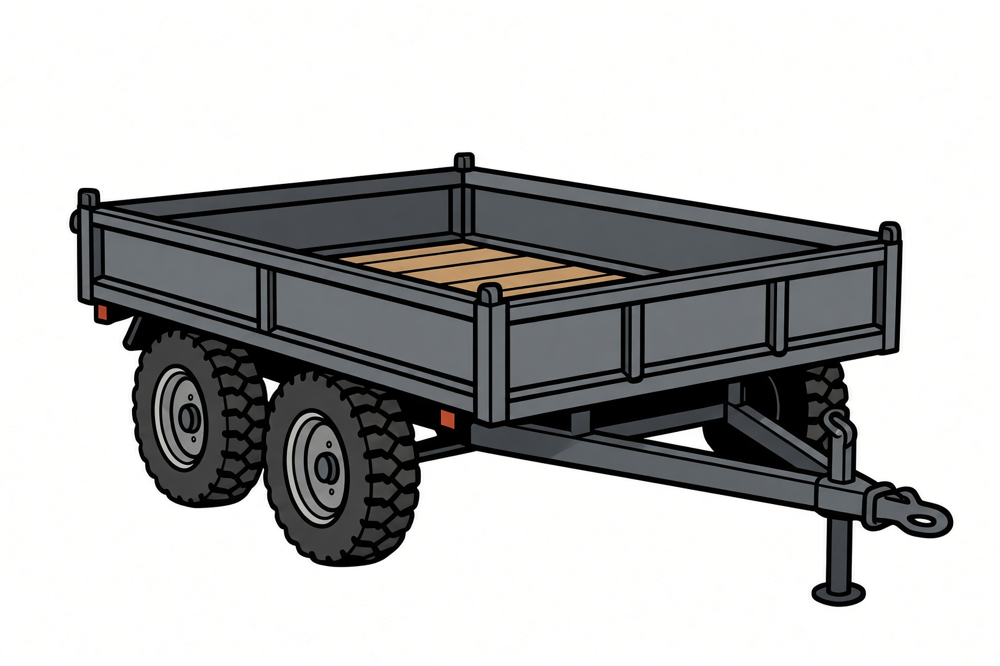

Sicherer Transport
Unser Maschinenanhänger mit 1,4 Tonnen zulässigem Gesamtgewicht ist ideal für den Transport des Mini-Baggers, des Dumpers oder von Baumaterialien. Stabiler Aufbau mit Holzbelag und Zweiachsfahrwerk.
Perfekt in Kombination mit unseren Mietmaschinen – so holst du alles in einem Zug ab.
Demnächst verfügbar – der Maschinenanhänger 1,4 t kommt in Kürze ins Angebot.
Technische Daten (Vorschau)
- TypMaschinenanhänger / Plattformanhänger
- Zulässiges Gesamtgewicht1.400 kg
- FahrwerkZweiachsig
- Ladeflächemit Holzbelag
- EinsatzTransport von Mini-Bagger, Dumper oder Material
- Führerscheinje nach Zugfahrzeug B oder BE
Mietkonditionen
- Tagesmieteauf Anfrage
- Wochenmietemöglich
- Kautionerforderlich
- Kombinationgünstig zusammen mit Bagger oder Dumper
Anfrage derzeit nicht möglich – demnächst verfügbar.